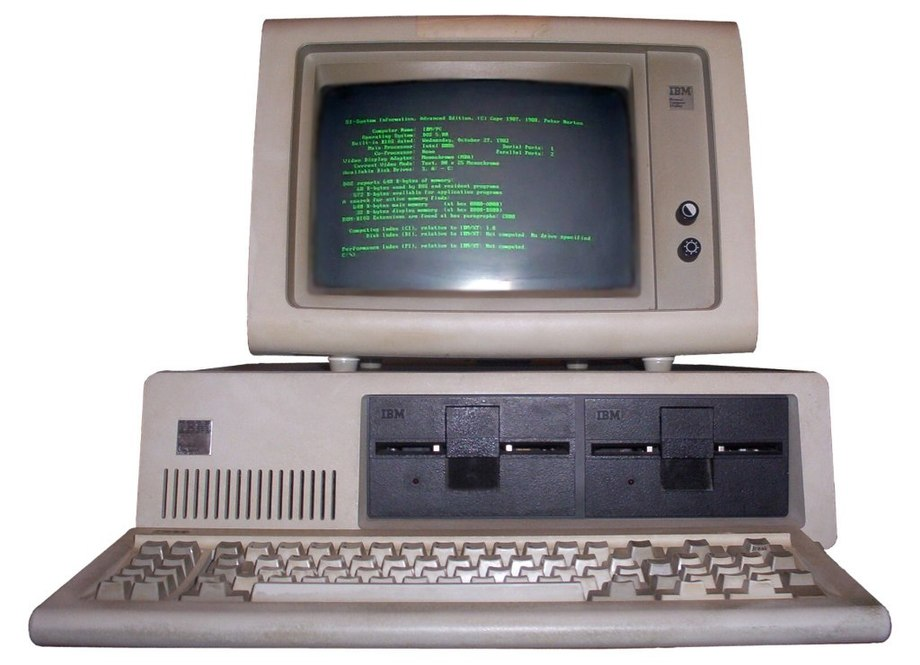
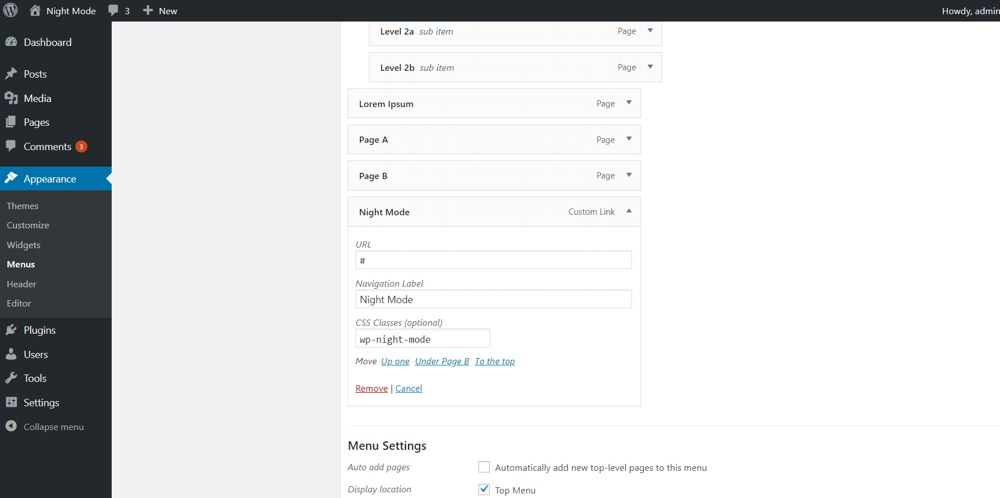
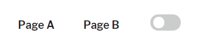

Switching off the Lights - Adding Dark Mode to WordPress
Yesterday, 30 March, StackOverflow started to offer a dark theme version (still in beta) for their visitors. On their home page, you can read:
“You’ve been asking for dark mode for years. The dark mode beta is finally here. Change your preferences any time.”
More and More web apps are offering or considering to offer a “dark mode” layout to their visitors that comes together with their normal, “light mode” layout. To name a few, YouTube, Twitter and Facebook have already implemented a dark mode. Some mobile applications including Wikipedia have also implemented this feature. The dark mode has been around since the first days of computers. Historically, phosphorescent screens were used for computer user interfaces. The screen usually consisted of a very dark color background, while the text appeared to be green or amber, depending on the type of phosphorus applied on the monochrome screen.

With the advent of teletext in the early 70s, different text color schemes were implemented, however, soon dark-on-light background color schemes became the de facto norm, leaving the dark mode to scholars and crazy hackers. However, recent trends show that more and more websites and businesses are looking back to it.
Some argue that a color scheme with a dark background is easier to read on the screen, because the lower brightness causes less eyestrain. A 2018 article by Popular Science suggests that the dark mode is easier on the eyes and consummates up to six times less battery. The black design is considered to be sophisticated, energetic, mysterious, elegant. According to an article by Phil Waknell, the dark mode makes visitors keep coming back to your website and can make your publishing platform or online business stand out from the crowd.
Personally, I like it when websites have a dark theme mode, especially at night, when my eyes are tired from working on the PC the whole day. So, as a theme developer, I realised that it will be nice to add this option to my WordPress themes. WordPress is my favourite CMS, however, they are not that quick in adopting new trends. I found that there are a lot of tutorials about how to implement dark theme mode in react.js, however, I could not find any info on how to do it in WordPress. There is the Dark Mode plugin, but it only adds dark mode to the WordPress admin dashboard. While this is nice, I think it will be even more benefitial, if the websites can actually offer this feature to their visitors. Similarly to how YouTube and Facebook are doing it. The user sets a dark mode preference and can revert to light mode at any time by changing his preference. By empowering your website’s visitors with this option, you can attract more readers to your website, make them spend more time on the page, read more articles and last but not least protect their eyes from being hurt.
Table of Contents
Add Dark Mode Switch Using a Plugin
I wanted to implement this feature for my websites, but I did not know where to start. Luckily, I recently found WP Night Mode, an awesome plugin that you can use to quickly add dark mode toggle to your WordPress website. Install the plugin and call the dark mode toggler by adding a “Night Mode” menu item with a css class “wp-night-mode”. To do this, go to appearance => menus and click on the options tab (top right corner), then put a tick on css classes. This will allow you to add the “wp-night-mode” class on the menu item. Now, add a menu item called “Night Mode” and assign the css class to it.

When you refresh the home page, you should see the dark mode switcher in your website menu. You can also add the dark mode toggler as a shortcode. For more information, refer to the plugin documentation.

You can now customize the layout of the dark mode by going to the theme customizer => Night Mode. You can change colors of links, text and background. However, in some cases you may want to have more flexibility. For further customization, you can use the “wp-night-mode-on” css class that is appended to the body tag on each page, when the dark mode is selected. For example, if you want to change the background color of specific element with id “div-1”, you can use the following code:
body.wp-night-mode-on #div-1 {
background-color: red;
}Add Dark Mode Switch Without a Plugin
If you are a theme developer like me or for some reason you are looking more flexibility, I will also provide a custom solution on how to add a dark mode toggle on your website. You can see a live implementaton of this in my free WordPress theme Nasio. Add the html and css
First, we need to add the html for our night mode toggle button. To do that, we will use a small part of the code from the WP Night Mode plugin, since it is open-source and free to use. Put this code in your theme’s header or footer. In my case, I decided to add it in the theme footer:
<div class="wpnm-button">
<div class="wpnm-button-inner-left"></div>
<div class="wpnm-button-inner"></div>
</div>
Now, lets make it pretty! Add the following css to it:
/* Dark mode switcher */
.wpnm-button {
font-size: 16px
}
.wpnm-button-inner-left:empty {
margin-left: -0.625em
}
.wpnm-button-inner-left:before, .wpnm-button-inner-left:after {
box-sizing: border-box;
margin: 0;
padding: 0;
/*transition*/
-webkit-transition: 0.4s ease-in-out;
-moz-transition: 0.4s ease-in-out;
-o-transition: 0.4s ease-in-out;
transition: 0.4s ease-in-out;
outline: none
}
.wpnm-button .wpnm-button-inner, .wpnm-button .wpnm-button-inner-left {
display: inline-block;
font-size: 0.875em;
position: relative;
padding: 0em;
line-height: 1em;
cursor: pointer;
color: rgba(149, 149, 149, 0.51);
font-weight: normal
}
.wpnm-button .wpnm-button-inner-left:before {
content: '';
display: block;
position: absolute;
z-index: 1;
line-height: 2.125em;
text-indent: 2.5em;
height: 1em;
width: 1em;
margin: 0.25em;
/*border-radius*/
-webkit-border-radius: 100%;
-moz-border-radius: 100%;
border-radius: 100%;
right: 1.625em;
bottom: 0em;
background: #FFB200;
transform: rotate(-45deg);
box-shadow: 0 0 0.625em white
}
.wpnm-button .wpnm-button-inner-left:after {
content: "";
display: inline-block;
width: 2.5em;
height: 1.5em;
-webkit-border-radius: 1em;
-moz-border-radius: 1em;
border-radius: 1em;
background: rgba(255, 255, 255, 0.15);
vertical-align: middle;
margin: 0 0.625em;
border: 0.125em solid #FFB200
}
.wpnm-button.active .wpnm-button-inner-left:before {
right: 1.0625em;
box-shadow: 0.3125em 0.3125em 0 0 #eee;
background: transparent
}
.wpnm-button.active .wpnm-button-inner-left:after {
background: rgba(0, 0, 0, 0.15);
border: 0.125em solid white
}
.wpnm-button .wpnm-button-inner-left {
color: rgba(250, 250, 250, 0.51);
font-weight: bold
}
.wpnm-button.active .wpnm-button-inner-left {
color: rgba(149, 149, 149, 0.51);
font-weight: normal
}
.wpnm-button.active .wpnm-button-inner-left + .wpnm-button-inner {
color: rgba(250, 250, 250, 0.51);
font-weight: bold
}The switcher with light mode set to on (default)
The switcher with dark mode set to on.
I am really fascinated by this code snippet, since it draws a beautiful sun and moon with just custom css! All the credit for this code should go for the plugin author Marko Arula.
Add dark mode class to the body tag
Next, we need to add a “dark-mode” class to the body tag. We will use this class later, to customize the dark mode layout.
To do that, we also need to find a way to store the user preference on page reload. We can use localStorage to store the user preferences. Use the following code:
jQuery(function($) {
/*Click on dark mode icon. Add dark mode classes and wrappers.
Store user preference through sessions*/
$('.wpnm-button').click(function() {
//Show either moon or sun
$('.wpnm-button').toggleClass('active');
//If dark mode is selected
if ($('.wpnm-button').hasClass('active')) {
//Add dark mode class to the body
$('body').addClass('dark-mode');
//Save user preference to Storage
localStorage.setItem('darkMode', true);
} else {
$('body').removeClass('dark-mode');
localStorage.removeItem('darkMode');
}
})
//Check Storage. Display user preference
if (localStorage.getItem("darkMode")) {
$('body').addClass('dark-mode');
$('.wpnm-button').addClass('active');
}
})
Now, select the dark mode layout (click on the toggle button) and inspect the body tag. The “dark-mode” css class should be added as a body class! Add some dark background to test if it is working as expected:
body.dark-mode * {
background: #333;
}This code should already be working fine, however, do you notice that after page refresh, the light mode is first loaded and only after some time the dark mode is finally applied? While this may be a working solution, it is still not perfect from user experience point of view. There must be a way to make it better!
The problem with the above approach is that we are using code only on the client (the browser) and our server does not know anything about what we are doing. So, it first renders the body without the “dark mode” class and the js adds the class only after the DOM has been fully loaded! Store User Preference Through Sessions Via Cookie
We need to find a way to send this body class to the server, so it loads before serving the page. There are a few ways to fix this. However, the problem that I faced was that the server does not have access to localStorage. So, I decided to store the user preference via a cookie. This means we need to create a cookie if the user chooses dark mode, get it with php and add a “dark-mode “body class if the cookie has been created. In this way, we will have body class “dark mode” as soon as the html is rendered and we will improve our user experience! Lets rewrite the above js code, this time storing the dark mode user preference via a cookie:
jQuery(function($) {
//Create the cookie object
var cookieStorage = {
setCookie: function setCookie(key, value, time, path) {
var expires = new Date();
expires.setTime(expires.getTime() + time);
var pathValue = '';
if (typeof path !== 'undefined') {
pathValue = 'path=' + path + ';';
}
document.cookie = key + '=' + value + ';' + pathValue + 'expires=' + expires.toUTCString();
},
getCookie: function getCookie(key) {
var keyValue = document.cookie.match('(^|;) ?' + key + '=([^;]*)(;|$)');
return keyValue ? keyValue[2] : null;
},
removeCookie: function removeCookie(key) {
document.cookie = key + '=; Max-Age=0; path=/';
}
};
//Click on dark mode icon. Add dark mode classes and wrappers. Store user preference through sessions
$('.wpnm-button').click(function() {
//Show either moon or sun
$('.wpnm-button').toggleClass('active');
//If dark mode is selected
if ($('.wpnm-button').hasClass('active')) {
//Add dark mode class to the body
$('body').addClass('dark-mode');
cookieStorage.setCookie('yonkovNightMode', 'true', 2628000000, '/');
} else {
$('body').removeClass('dark-mode');
setTimeout(function() {
cookieStorage.removeCookie('yonkovNightMode');
}, 100);
}
})
//Check Storage. Display user preference
if (cookieStorage.getCookie('yonkovNightMode')) {
$('body').addClass('dark-mode');
$('.wpnm-button').addClass('active');
}
})
Add dark mode class via the body class filter
Now we have a cookie “yonkovNightMode” that is created when the user opts for the dark mode layout. The only thing that is left is to do is to get this cookie with php and add it to the body class. Add this code to your child theme’s functions.php:
<?php
/**
* Enable dark theme mode
* Forked from https://wordpress.org/plugins/wp-night-mode/
*/
function yonkov_dark_mode($classes) {
$yonkov_night_mode = isset($_COOKIE['yonkovNightMode']) ? $_COOKIE['yonkovNightMode'] : '';
//if the cookie is stored..
if ($yonkov_night_mode !== '') {
// Add 'dark-mode' body class
return array_merge($classes, array('dark-mode'));
}
return $classes;
}
add_filter('body_class', 'yonkov_dark_mode');
Voila! You now have a fully-working prototype of the dark mode layout. Feel free to use it on your website to improve the user experience and protect your visitors’ eyes durning night time!
Ready-made Solution: List of Themes with a Dark Mode Switch
Most WordPress themes can be customized to support dark mode, either by using the Night Mode plugin or with the above custom solution. In any case, you will have to write a lot of custom css on top of it to set up the design of the dark theme. Wouldn’t it be awesome if there was a WordPress theme that had a dark mode toggle button out of the box, so we do not have to do all the customizations ourselves? Well, here are some good news for those of you who are looking for the full package. There are three free WordPress themes I am aware of, which have already implemented night mode switch out of the box. This means that website visitors can toggle between light and dark theme mode with a single click without you having to write a single line of code!
Estera
Estera is a lightweight multi-purpose WordPress theme with a focus on speed and productivity. The theme is perfect for WooCommerce websites, portfolios or blogs. It has free and premium version. The theme features a dark mode switch that enables site visitors to switch between light and dark mode with a single click. The theme is fully customizable and feature-rich (even its free version). What comes really handy is that the site admin can choose where to position the dark mode switch (header or footer).
Nasio
Nasio is a lightweight WordPress blog theme without any libraries or frameworks that empowers the site admin and the site visitors to switch between day and night theme mode by a simple toggle button found in the theme’s footer. For more information, check theme’s documentation.
Highstarter
Highstarter is a lightweight WordPress theme for portfolio websites which also have dark mode switch that enables visitors to toggle between light and dark theme mode.
Minimal Lite
Minimal Lite is a beautiful theme, perfect for all kinds of blogs or portfolio wevsites. It also includes demo data that will let you set up your new website as fast as possible. However, its biggest advantage is the dark mode toggle option. Its clean and simple day and night mode switch in a single click creates a cozy and user-friendly environment.
Let me know if you are aware of some other WordPress themes that have implemented dark mode switcher by sending an email to yonkov.atanas@gmail.com. Happy coding!
Read more: